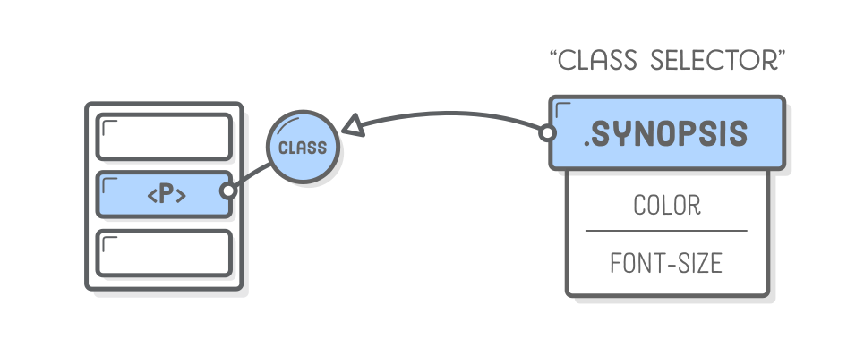
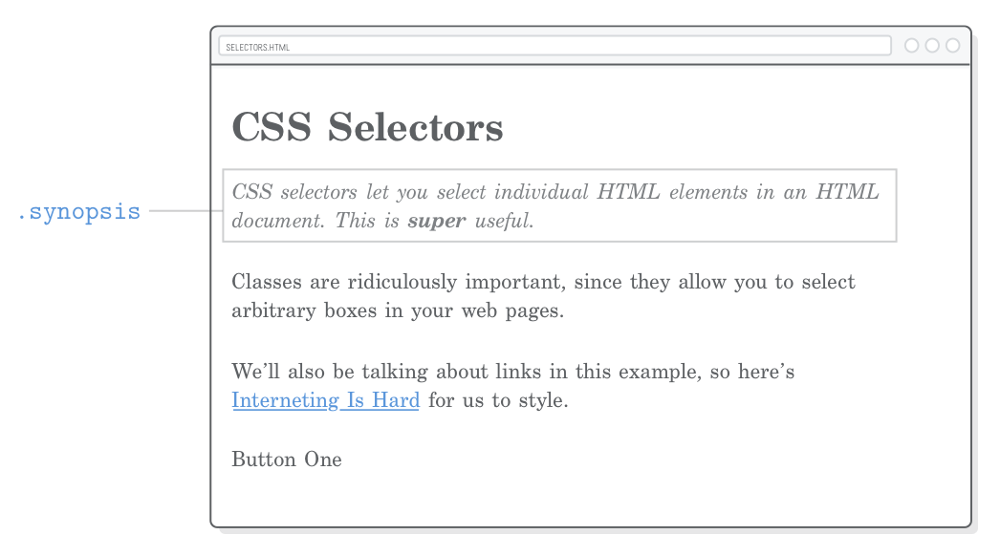
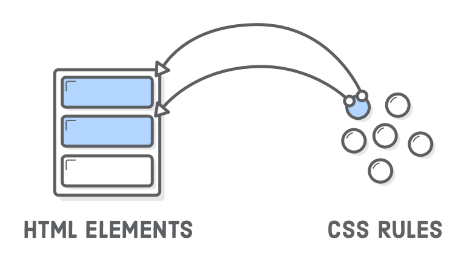
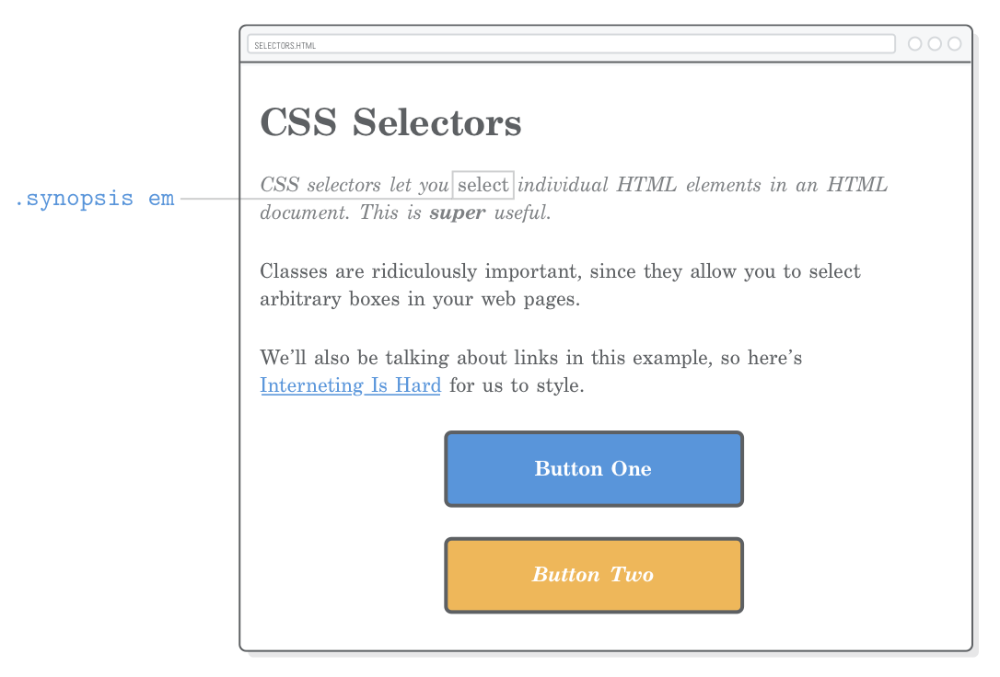
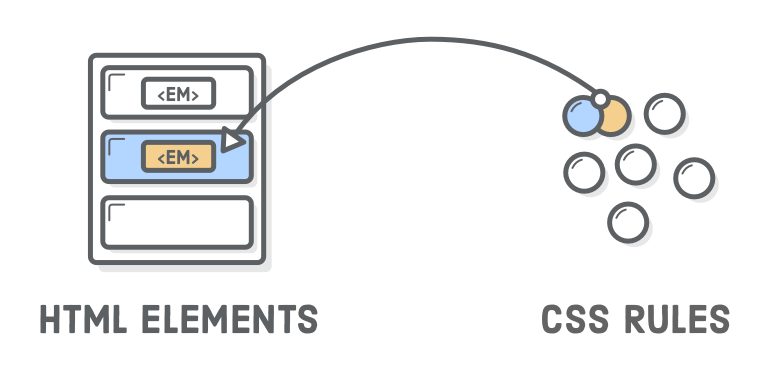
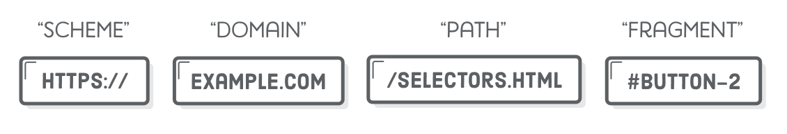
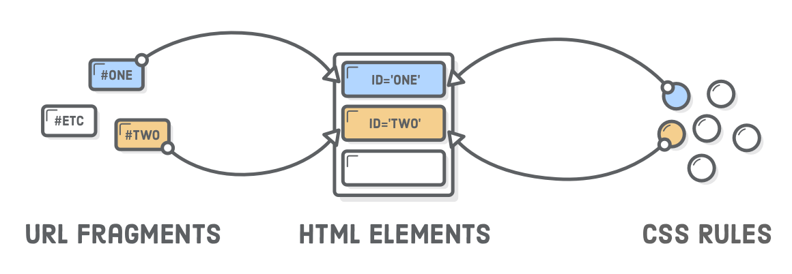

A friendly web development tutorial for plucking out HTML elements
Way back in the
Links and Images
chapter, we learned how to connect an HTML document to other files
in our project. “CSS selectors” are similar, except instead of
navigating between whole files, they let us map a single CSS rule to
a specific HTML element. This makes it possible to
selectively style individual elements while ignoring
others.
Unless you want every section of your website to look exactly the
same, this is a crucial bit of functionality for us. It’s how we say
things like “I want this paragraph to be blue and that other
paragraph to be yellow.” Until now, we’ve only been able to turn
all our paragraphs blue (or yellow).
The only CSS selector we’ve seen so far is called the “type
selector”, which targets all the matching elements on a page. In
this chapter, we’ll explore more granular ways to style a web page
with class selectors, descendant selectors, pseudo-classes, and ID
selectors.
Setup
We’ll only need one HTML file and a CSS stylesheet for our example
this chapter. Create a new folder called
css-selectors and new web page called
selectors.html with the following markup:
<!DOCTYPE html><htmllang='en'><head><metacharset='UTF-8'/><title>CSS Selectors</title><linkrel='stylesheet'href='styles.css'/></head><body><h1>CSS Selectors</h1><p>CSS selectors let you <em>select</em> individual HTML elements in an HTML
document. This is <strong>super</strong> useful.</p><p>Classes are ridiculously important, since they allow you to select
arbitrary boxes in your web pages.</p><p>We’ll also be talking about links in this example, so here’s
<ahref='https://internetingishard.com'>Interneting Is Hard</a> for us to
style.</p><div>Button One</div></body></html>
Go ahead and create that styles.css stylesheet in the
same folder, too. This gives us everything we need to explore CSS
selectors.
If you’re just diving into this tutorial series, be sure to have a
quick read through the
Introduction
to get set up with the Atom text editor.
Class Selectors
“Class selectors” let you apply CSS styles to a specific HTML
element. They let you differentiate between HTML elements of the
same type, like when we had two <div> elements in
the
previous chapter, but only wanted to style one of them. Class selectors require two
things:
A class attribute on the HTML element in question.
A matching CSS class selector in your stylesheet.

We can use a class selector to style the first paragraph of our
example page differently than the rest of them. This could be, for
instance, the synopsis of a newspaper article. First, let’s add a
class attribute to the desired paragraph:
<pclass='synopsis'>CSS selectors let you <em>select</em> individual HTML
elements in an HTML document. This is <strong>super</strong> useful.</p>
Now, we can pluck out that
<p class='synopsis'> element in our CSS with the
following (add this to styles.css):
This rule is only applied to elements with the
corresponding class attribute. Notice the dot
(.) prefixing the class name. This distinguishes class
selectors from the type selectors that we’ve been working with
before this chapter.

Class Naming Conventions
The value of the HTML class attribute can be (almost)
anything you want as long as it matches the selector in your CSS.
The standard naming convention for classes is to use all lowercase
and hyphens for spaces, just like file and folder names.
Adding a class attribute doesn’t alter the semantic
meaning of your HTML document at all—it’s purely for hooking
into your CSS stylesheet. However, it’s still usually a good idea to
avoid naming classes based on their appearance. If we chose to name
our class .italic, we wouldn’t be able to do much
besides make it italic in our CSS without leading to a confusing
situation. Using something semantic like
.synopsis gives us more freedom for our CSS to
customize how that synopsis is displayed.
More Useful Divs
The class attribute isn’t limited to
<p> elements—it can be defined on
any HTML element. So, armed with CSS class selectors, our
generic <div> and <span> boxes
from the previous chapter become much, much more useful. We can use
them to style both individual elements as well as arbitrary sections
of our web page.
Let’s start with individual elements by recreating our button from
the previous chapter. This time, we’ll use a class instead of a
div selector. Add the following to
styles.css:
.button {
color: #FFF;
background-color: #5995DA; /* Blue */font-weight: bold;
padding: 20px;
text-align: center;
border: 2px solid #5D6063; /* Dark gray */border-radius: 5px;
width: 200px;
margin: 20px auto;
}
Of course, we need a corresponding class attribute for
this to work. Change the <div> in
selectors.html to match the following:
<divclass='button'>Button One</div>
Unlike the previous chapter that styled all the
<div> elements, this lets us use it for other
things besides buttons.
Container Divs
Remember that <div> doesn’t alter the semantic
structure of a page. This makes it a great tool for defining the
presentational structure of a web page. By wrapping other
HTML elements in <div> tags, we can organize our
site into larger layout-oriented chunks without messing up how
search engines view our content.
For example, let’s try to create a fixed-width layout using the
auto-margin technique
that we learned in the previous chapter. First, wrap our entire
document in a generic <div> and give it a unique
class:
<body><divclass='page'><!-- Add this --><h1>CSS Selectors</h1><pclass='synopsis'>CSS selectors let you <em>select</em> individual HTML
elements in an HTML document. This is <strong>super</strong> useful.</p><p>Classes are ridiculously important, since they allow you to select
arbitrary boxes in your web pages.</p><p>We’ll also be talking about links in this example, so here’s
<ahref='https://internetingishard.com'>Interneting Is Hard</a> for us to
style.</p><divclass='button'>Button One</div></div><!-- And this --></body>
Then, add the following to styles.css:
.page {
width: 600px;
margin: 0 auto;
}
No matter how you resize the browser window, our web page will
always be 600 pixels wide and centered in the available space. Note
that this was the exact same way we centered our button, but now
we’re doing it to multiple elements at the same time by nesting them
in a generic container.
This is how layouts are defined in more complex web pages. For
instance, if our page had a sidebar, we would nest all the sidebar
elements in another<div> with a
.sidebar class. We’ll see this in action in the
next chapter. For now, the key
takeaway is that without class selectors to differentiate our
<div> elements, none of this would be possible.
Reusing Class Styles
The same class can be applied to multiple elements in a single HTML
document. This means that we can now reuse arbitrary CSS
declarations wherever we want. To create another button, all we have
to do is add another HTML element with the same class:
This gives us a second button that looks just like the first
one—without writing a single line of CSS! Organizing similar
graphical elements into reusable CSS rules like this makes life much
easier as a web developer. If we ever wanted to, say, change the
button color, we would only have to do it in one place and all our
buttons would automatically update.

Modifying Class Styles
What if we want to alter our second button a little bit?
Fortunately, we can apply multiple classes to the same HTML
element, too. The styles from each class will be applied to the
element, giving us the opportunity to both reuse styles from
.button and override some of them with a new class.
Go ahead and add another class to our second button with the
following markup. Notice how multiple classes live in the same
class attribute, separated by spaces:
This element now has two separate classes, and we can use either of
them to style it. This opens up some options. Styles shared by both
buttons can live in the .button class (as they already
do), and styles specific to the second button reside in the
.call-to-action class (be sure to add this
after the .button rule):
There’s a couple of important things going on with our second button
now:
It’s adding a newfont-style declaration to
the original .button rule.
It’s overriding an existing
background-color style from .button.
Overriding occurs because of the order of
.call-to-action and .button in our
stylesheet. When there’s two conflicting properties in a CSS file,
the last one is always the one that gets applied. So, if you moved
.call-to-action to the top of styles.css,
.button would have the final word on the value of
background-color, and it would remain blue.
This means that the order of the class attribute in our
HTML element has no effect on override behavior. Multiple classes on
a single element are applied “equally” (for lack of a better term),
so the precedence is determined solely by the order of the rules in
styles.css. In other words, the following elements are
effectively equivalent:
<!-- These result in the same rendered page --><divclass='button call-to-action'>Button Two</div><divclass='call-to-action button'>Button Two</div>
This does, however, get more complicated when CSS specificity is
involved, which we’ll discuss at the end of this chapter.
Descendant Selectors
You may have noticed that the <em> in our first
paragraph is no longer distinguishable from its surround text, since
our .synopsis rule made everything italic.
To alter that <em> element, we could add another
class directly to it, but that won’t result in very maintainable
code. We want to treat .synopsis as its own independent
component that we can style entirely from CSS (i.e., without
requiring alterations to our HTML just for the sake of styling
something.)

This is what “descendant selectors” are for. They let you target
only those elements that are inside of another element. For
example, we can pull out that <em> in the
.synopsis paragraph with the following:
.synopsisem {
font-style: normal;
}
Adding this rule to styles.css will make the
<em> display as upright (roman) characters, thus
differentiating it from the italics we put on the entire
<p> text. The rest of the
<em> elements on the page will be unaffected.

Descendant selectors aren’t limited to class selectors—you can
combine any other group of selectors this way. For instance, if we
wanted to select only <em> elements inside of
headings, we might use something like this:
h1em {
/* Some other styles */
}
Again, the goal of this chapter is to let you apply styles to
exactly the element you want. Descendant selectors are a great tool
towards this end. You may also want to check out the related “child
selector”
over at MDN
if you’ve still got room in your toolbox.
Don’t Overdo It
You can nest descendant selectors as deep as you want, but don’t get
carried away. Life gets confusing and terrible when you start
writing rules that look like this:
/* Try to avoid this */.articleh2.subheadingem {
/* Special styles */
}
This isn’t the least bit reusable because it matches
only the following HTML structure:
<divclass='article'><h2><spanclass='.subheading'>This is <em>really</em> special text</span></h2></div>
If you ever wanted to apply these styles to an
<h2> heading that’s not wrapped in
<div class='article'>
tags, you’re kind of screwed. Same deal if you want to apply them to
an
<h3> heading anywhere on the page. This kind of
CSS also leads to a
specificity nightmare.
Pseudo-Classes for Links
So far, all the CSS selectors we’ve seen map directly to a piece of
HTML markup that we wrote. However, there’s more going on in a
rendered web page than just our HTML content. There’s “stateful”
information about what the user is doing (opposed to the content
we’ve authored).
The classic example is a link. As a web developer, you create an
<a href> element. After the browser renders it,
the user can interact with that link. They can hover over it, click
it, and visit the URL.
CSS “pseudo-classes” provide a mechanism for hooking into this kind
of temporary user information. At any given time, an
<a href> element can be in a number of different
states, and you can use pseudo-classes to style each one of them
individually. Think of them as class selectors that you don’t have
to write on your own because they’re built into the browser.
Basic Link Styles
Pseudo-classes begin with a colon followed by the name of the
desired class. The most common link pseudo-classes are as follows:
:link – A link the user has never visited.
:visited – A link the user has visited before.
:hover – A link with the user’s mouse over it.
:active – A link that’s being pressed down by a
mouse (or finger).
Let’s take a look at all of these by adding the following rules to
our CSS stylesheet (also note our use of
keyword colors
instead of our usual hex codes):
If you’ve never been to the
InternetingIsHard.com home page, you
should see a blue link. Otherwise, you’ll see a purple link. When
you hover over the link, it will turn aqua, and when you push down
on it, it’ll turn red.
Visited Hover State
The above snippet is just fine for most websites, but take a closer
look at the a:visited behavior by changing the
href attribute to a URL that you’ve been to before. Our
a:hover style is applied to both visited and unvisited
links. We can refine our links even more by stringing pseudo-classes
together. Add this below the previous snippet:
a:visited:hover {
color: orange;
}
This creates a dedicated hover style for visited links. Hovering
over an unvisited link changes it to aqua, while hovering over a
visited link will turn it orange. Fantastic! Except for the fact
that this breaks our a:active style due to some
complicated CSS internals that you’ll never want to read about. When
you click down, our link won’t turn red anymore.
Visited Active State
We can fix that with a:visited:active. Add the
following to the end of our stylesheet. Note that, as with our
.call-to-action class, the order in which these are
defined in styles.css matters:
a:visited:active {
color: red;
}
These last two sections let you style visited links entirely
separately from unvisited ones. It’s a nice option to have, but
again, you’re welcome to stop at basic link styles if that’s all you
need.
Pseudo-Classes for Buttons
Pseudo-classes aren’t just for styling text links—they can be
applied to any kind of selector (not just type selectors). Instead
of styling a:link and friends, we’ll be modifying our
.button class with pseudo-classes in this section. This
will let us create buttons that actually go somewhere.
Link Elements, Not Div Elements
First, we need change our buttons to be
<a href> elements instead of generic
<div> elements, as shown below:
If you reload this in your browser, you’ll see that we lost some of
our styles even though we’re using the same classes. This is because
<a> is an
inline element
by default and also has a default color value.
We need to change it to a block element and remove some of the
default link styling.
Button Styles
Let’s start with :link and
:visited variants. We’re using a similar pattern as in
the previous section, but since these are buttons, we want to keep
both the unvisited and visited color the same. Change the existing
.button rules to match the following:
.button:link, /* Change this */.button:visited { /* Change this */display: block; /* Add this */text-decoration: none; /* Add this */color: #FFF; /* The rest is the same */background-color: #5995DA;
font-weight: bold;
padding: 20px;
text-align: center;
border: 2px solid #5D6063;
border-radius: 5px;
width: 200px;
margin: 20px auto;
}
Notice the new :link and
:visited pseudo-classes in the selector. Without it,
our color would not override the browser’s default
a:link style.
CSS specificity explains
why this is the case in greater detail. Next, let’s do the hover
states:
Both our buttons will be a lighter blue on hover. Finally, let’s
make it a little darker when the user presses the mouse down with
the :active pseudo-class:
The great part about this is that all the styles we just defined are
entirely reusable. Stick a .button class on
any HTML element, and you’ll turn it into an interactive
button.
The Other Button
Now, what about that second button? It’s supposed to have a yellow
background, but we broke it with the code from the previous section.
Our .button:link selector was more “specific” than our
current .call-to-action rule, so it took precedence.
Again, we’ll explore this further at the end of the chapter.
For now, let’s fix it by applying some pseudo-classes to our
.call-to-action rule. Replace the existing rule with
the following (make sure this appears after the new
.button styles from the previous section):
Since we only added the .call-to-action class to our
second button, that’s the only one that’ll turn yellow. Of course,
we still need the .button class on both
<a> elements because it defines shared styles
like the padding, border radius, and font weight.
Pseudo-Classes For Structure
Link states are just one aspect of pseudo-classes. There’s also a
bunch of other pseudo-classes
that provide extra information about an element’s surroundings. For
example, the :last-of-type pseudo-class selects the
final element of a particular type in its parent element. This gives
us an alternative to class selectors for selecting specific
elements.
For instance, we could use :last-of-type to add some
space after the last paragraph of our example page:
p:last-of-type {
margin-bottom: 50px;
}
This avoids selecting the first two <p> elements
without requiring a new class attribute on the
last paragraph:
We could even use a :first-of-type pseudo-class in
place of our .synopsis class. Replacing the existing
.synopsis rule with the following snippet should result
in the exact same page.
There’s pros and cons to using this method over plain old classes.
For instance, this only works if our synopsis is a
<p> element. If we ever wanted to create a
multi-paragraph synopsis by wrapping a bunch of
<p> elements in a
<div class='synopsis'>, we’d have to rewrite our
CSS accordingly. On the other hand, the pseudo-class method lets us
style specific elements without having to alter the HTML at all.
This gives us a very clean separation of content from presentation.
Caveats
Ok, so actually the pseudo-class method is a little more
complicated. They’re still a useful tool—as long as you know
their ins-and-outs. The :first-of-type and
:last-of-type selectors only operate inside their
parent element. That is to say, p:first-of-type selects
the first <p> in every container
element.
We have a single generic <div> wrapping our
content (.page), so this isn’t a problem for us.
However, consider what happens when we add this to the bottom of our
.page element:
<divclass='sidebar'><p>If this page had a sidebar...</p><p>We’d have some problems with pseudo-classes.</p></div>
We won’t be able to make a real sidebar until the
next chapter, but this does
highlight the complications of pseudo-classes for structure. The
first <p> element here will also match
p:first-of-type because the pseudo-class’s scope is
limited to the parent element.
If you wanted to avoid the sidebar paragraphs and select only the
first <p> in our
<div class='page'>, you would need to limit its
scope using a
child selector, like so:
All of this is yet another example of how there are many ways to do
the same thing in the wonderful world of HTML and CSS. Different
developers adhere to different schools of thought. Some like the
semantic nature of pseudo-classes, while others go to the far
extreme with explicit class attributes on
every HTML element.
ID Selectors
“ID selectors” are a more stringent alternative to class selectors.
They work pretty much the same way, except you can only have
one element with the same ID per page, which means you
can’t reuse styles at all. Instead of a
class attribute, they require an
id attribute on whatever HTML element you’re trying to
select. Try adding one to our second button:
The corresponding CSS selector must begin with a hash sign
(#) opposed to a dot. Adding the following to
styles.css will change the text color of our yellow
button:
#button-2 {
color: #5D6063; /* Dark gray */
}
The problem is, if we wanted to share this style with another
button, we’d have to give it another unique
id attribute. Pretty soon, our CSS would start to look
pretty gnarly:
/* (This is painful to maintain) */#button-2,
#button-3,
#checkout-button,
#menu-bar-call-to-action {
color: #5D6063;
}
For this reason, ID selectors are generally frowned upon. Use class
selectors instead.
URL Fragments
id attributes need to be unique because they serve as
the target for “URL fragments”, which we sort of glossed over in our
discussion of URLs. Fragments are how you point the user to a specific part of a web
page. They look like an ID selector stuck on the end of a URL.

For example, if we wanted to point the user to our second button, we
could use the following. Note that we can omit the URL entirely if
we’re linking to a different section on the same page:
<!-- From the same page --><ahref='#button-2'>Go to Button Two</a><!-- From a different page --><ahref='selectors.html#button-2'>Go to Button Two</a>
If you add the first option to our selectors.html page
and click it, you’ll see the URL in the browser change. To actually
see it jump down to the second button, you’ll need to add some more
dummy content to the page or make the window height very short, as
the browser will limit scrolling to the visible page.

This overlapping functionality is more reason to avoid ID selectors.
They create a dependency between your website’s URLs and your CSS
styles. Imagine using a bunch of id attributes on your
headings as both URL fragments and ID selectors. If you forgot to
update your stylesheet every time you edited the URL of a section,
you would actually break your website.
CSS Specificity
Earlier in this chapter, we talked about how
order matters when
it comes to CSS rules in an external stylesheet. All else being
equal, rules are applied from top-to-bottom. This allowed us to
override rules in a predictable manner.
Unfortunately, not all CSS selectors are created equal. “CSS
specificity” is the weight given to different categories of
selectors. This means that certain selectors will
always override other ones, regardless of where they appear
in the stylesheet.
Let’s start by seeing where this doesn’t break. If you add
the following after our existing .call-to-action rules,
it will override the previous background-color. If you
stick it at the top of the file, it’ll get overridden later on, so
our button won’t turn red. This is expected behavior.
.call-to-action:link,
.call-to-action:visited {
background-color: #D55C5F; /* Red */
}
Now, watch what happens when we try to do the same thing with an ID
selector. First, be sure to delete the previous snippet, then try
adding this before our existing
.call-to-action rules:
#button-2 {
background-color: #D55C5F; /* Red */
}
ID selectors have higher specificity than class selectors, so this
will turn our second button red even though we try to set
the background-color with
.call-to-action:link later in our stylesheet. The whole
“order matters” concept only works when all your rules have the same
specificity.
The specificity of selectors we’ve seen in this chapter are show
below, from greatest to least:
#button-2
.button:link
a:link and
.synopsis em (they’re
equal)
.button
a
This can get very confusing. It’s such a big problem that an entire
methodology called “BEM” has evolved. BEM attempts to make CSS rules more reusable by
making everything a class selector. This completely
eliminates the potential for specificity issues.
BEM is outside the scope of this tutorial. The takeaway here is that
CSS rules are not necessarily applied in sequential order, but you
should try to make the browser do so by writing CSS that uses the
same specificity.
Summary
In this chapter, we got some hands-on experience with class
selectors, descendant selectors, pseudo-classes, link styling, and
ID selectors. The goal of all this was to be able to target a
specific HTML element from your CSS. Class selectors are by far the
most versatile and come with the least amount of drawbacks. As a
result, they’ll become part of your daily life as a web developer.
Like it or not, things got a lot more complicated this chapter.
We’re now able to make our CSS interact with an HTML document in
half a dozen different ways. Furthermore, over the next few
chapters, we’ll begin to see a dependency between our HTML’s
structure and the layout of a web page. With all this interplay
between CSS and HTML, it can be hard to know where to start building
a new web page.
The
separation of content from presentation
helps guide this process. You need content before you can present
it, so your first step is usually to mark up your raw content with
HTML tags. Once that’s prepared, you’re ready to add
class attributes to your elements and style them
one-by-one. When you discover a need for some extra structure to
create a desired layout (e.g., turn a group of elements into a
sidebar), that’s when you start wrapping your content in container
<div>’s.
This chapter covered almost all the CSS selectors that power real
websites. We’ve got the tools we need to dive much deeper into
complex CSS layouts. In the next installment of
HTML and CSS Is Hard, we’ll learn how to create columns and sidebars using CSS floats.